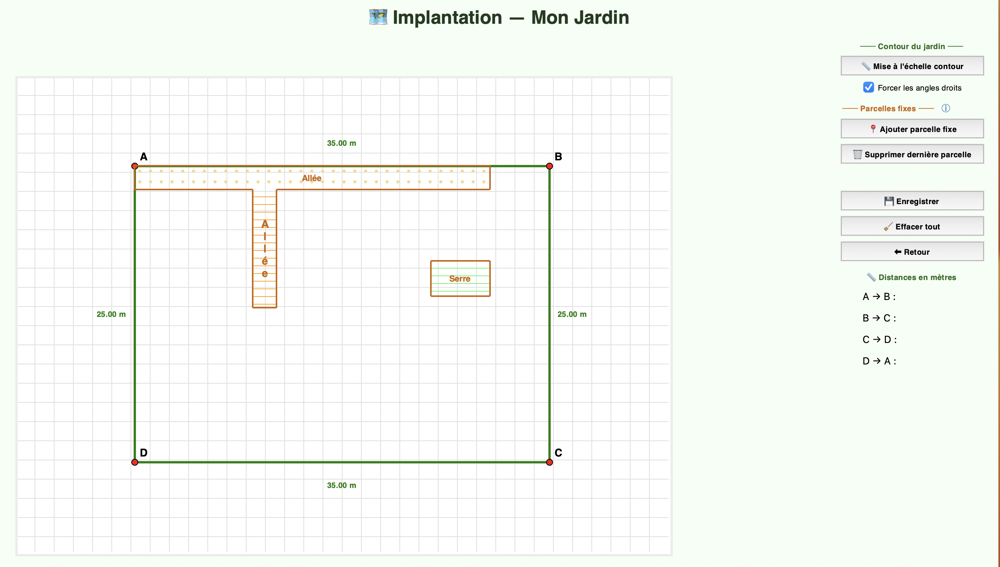
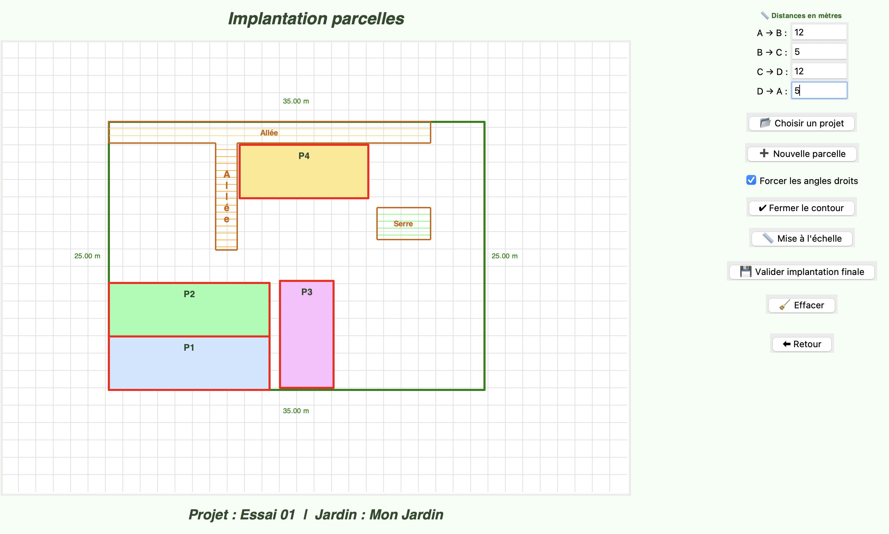
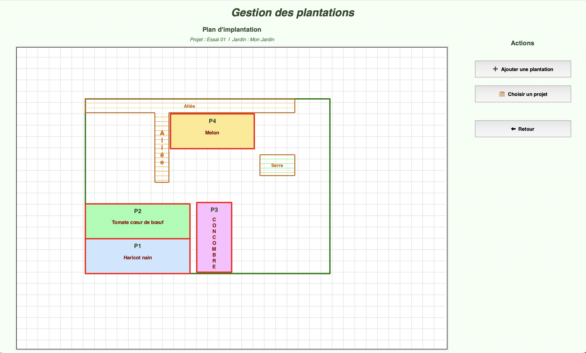
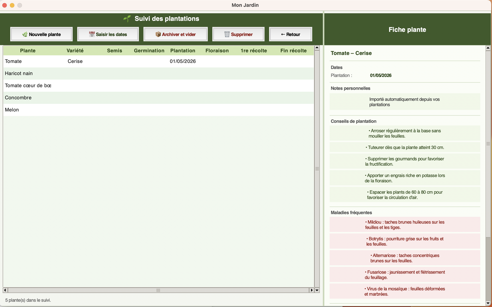

Comment créer et organiser votre jardin étape par étape
Cette étape permet de créer le contour de votre jardin et d'y placer des parcelles fixes — des zones permanentes qui ne changent pas d'une saison à l'autre, comme une allée, un rang de vigne ou une serre.

Cette étape permet de positionner les zones cultivées à l'intérieur du jardin. Le principe est identique à celui du contour : on place les points, on ferme le contour et on saisit les distances réelles.
Les parcelles sont nommées automatiquement : P1, P2, P3… Pas besoin de les nommer manuellement.

Le contour est tracé et les parcelles sont délimitées — il ne reste plus qu'à semer et planter ! Cette étape permet d'affecter une plante à chaque parcelle.

Toutes les plantations enregistrées à l'étape précédente apparaissent sur cette page. On peut y :

Ces opérations ne sont pas gérées directement par le logiciel — elles restent à la discrétion et au savoir-faire du jardinier !
Choisissez la version correspondant à votre ordinateur. Le logiciel est entièrement gratuit, sans publicité et sans virus.